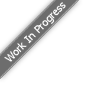

Toggle navigation
Match Calendar
Match List
Post Generator
Settings
Take a Tour
-
Last Updated:
Refresh
Click me to enable Desktop notifications
Desktop alerts are blocked, no notifications can be made.